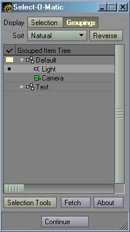
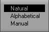
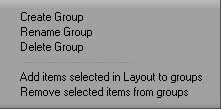
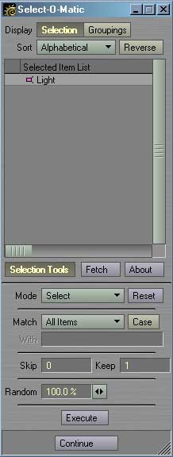

|
To install ReplaceObjects, just follow these steps:
 Select-O-Matic's core is the Master plug-in of the same name. This can be added directly from the Master plug-ins panel, or via the Select-O-Matic Properties generic plug-in. Initially, the properties panel shows the current selection. This can be changed to show custom groups by clicking the Groupings button at the top of the panel.  How the list is sorted is determined by the Sort popup. The list can be sorted in Natural order, Alphabetically, and when in Groupings mode, Manually by dragging around items within groups.  Groupings allow the creation of selection sets of items. An item can belong to multiple groups, and any combination of items can be in any group. Groups can also have sub-groups. Items can be moved between groups by simple drag and drop, and can be sorted in the same way when Sort is set to Manual. You can create a new group by right-clicking in the group list and selecting Create Group from the menu. You can also remove or rename existing groups from here. Add selected items in Layout to group will add all selected items to the current group. You can also remove items selected in the list from the groups they belong to. The yellow block to the left of one of the groups marks it as the current group. Similarly, the black dot marks an item as the current item. These are used as the starting point by the navigation generics. You can click in this column to directly set the current group or item.  The Selection Tools button toggles the selection controls on and off. The Mode popup determines if this palette will selected, deselect or add to the current selection or invert the selection of items that match when the Execute button is clicked. The Match popup allows for specific comparisons to be made based on item name. The Skip/Keep fields allow you to skip some number of items, and then keep another count of items. For example, a skip of one and a keep of 2 would skip one item, keep two, skip another item, keep two more, and so on. The Random field allows a random number of the items to be selected out of the total number of matches. The closer this is to 100%, the more items will be selected. Once you have entered the appropriate settings, click the Execute button to perform it. It's best to be in the Selection display mode so you can see the effects immediately. The Fetch button will simply refresh the selected items list. This is usually done automatically, so you'll likely not need to use this button.
Navigation Generics
The navigation generics allow you to walk the groupings list through Layout menus or key mappings:
|